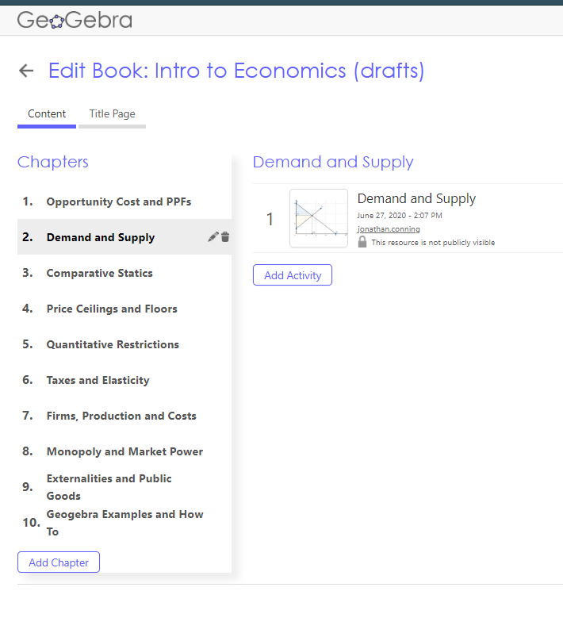
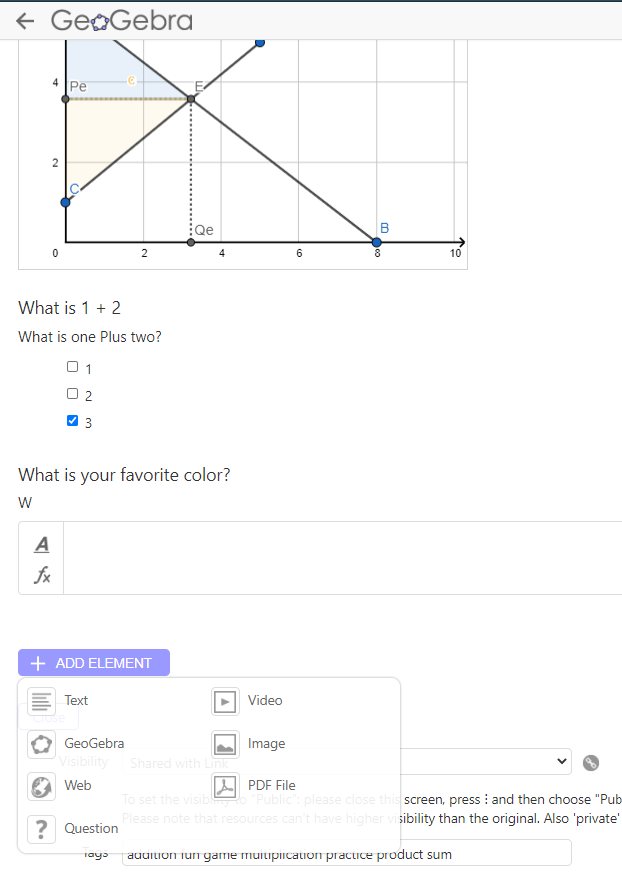

geogebra LMS
Rant about geogebra and open-source
Sent by JC via email 6/29/20
TLDR: Geogebra is an LMS type system like Tophat; they all build from similar components and exchange data via a format called SCORM. We could recreate much of the functionality of TH inside geogebra or geogebra plus a free/cheap LMS such as Moodle.
Original Text
I've been exploring geogebra applets mostly to start thinking about the static and dynamic graphs and tables we might use.
The applets are pretty amazing and all the more amazing once I discovered that applets are just the atomic units in a large ecosystem which make up an LMS type system very similar to Tophat.
We could almost do everything that TopHat can do now (including auto-graded questions, embedded discussion threads, rich multimedia interactive books, live classroom presentations) with GB. We should continue to plan for TopHat b/c GB falls short on just a few key dimensions but it's been enlightening to discover that TopHat is just one more system built upon many of the same open-source software and open-standard protocols (SCORM) that also power Geogebra, Moodle, Blackboard and other 'documentation and learning systems'.
Let me describe geogebra a bit more because some of its powers are immediately useful and should complement Tophat.
The geogebra applets that we've played with are just one of the elements in the now larger GB ecosystem. GB has evolved into a full-fledged LMS like system and digital publisher somewhat like TH that offers:
- Books (like a TH course or book) which include
- Chapters which include a collection of (like a Folder in TH)
- Activities (like a TH pages)
- Classes: Any book or Activity can assigned or presented (just like TH) to
- Groups: enrolled students.
Here is screenshot of me editing an Eco100 geogebra book (click on the link to see the few released bits thus far). This book will mimic the organization of our Tophat book not with the aim to replicate the whole course but because it makes sense to organize geogebra applets/activities there for easy referral as we build the TH book/class.

Here is a screenshot of the menu you see when you edit a GB activity, very similar to the blue plus sign for adding an element in a TH page. You can embed 'elements' like text boxes (with much nicer latex support), videos, URLs, auto-graded questions, etc

Just like TH, GB is built around the idea that some things that might be assigned asynchronously (e.g. read the Page and answer the questions) might also be run synchronously (e.g. 'present' the Activty live in class).
There are some things that seem to exist in GB but not TH or that are better in GB.
- Geogebra already has an announcement system where you can broadcast to the whole class or have personal side conversations with particular students. TH seems to have something similar (Slate) promised for the Fall that would replicate that (and have a few more bells/whistles).
- Activities seem easier to edit in GB compared to TH (e.g. just drag and drop elements in the page to reorganize). GB support for Latex is much more deeply embedded.
- In GB you can assign an activity to the whole class (or breakout groups) to take 10 mins to work with their geogebra applets (e.g. 'What happens to profits when fixed costs rise' or 'build a supply and demand diagram in GB') and the instructor (or TA!) can monitor progress by seeing a wall of live thumbnails that change as students make their edits. The instructor can then jump into any student's workspace to provide help or comments or to highlight what the student did for the whole class to see. This is really 'flipping' the classroom.
- Though GB has few question types (auto-graded multiple choice and short answer) it seems to have a killer feature that at the moment only works with Moodle (an open-source LMS) that blows tophat out of the water (but requires some sophistication from the instructor side). Basically it allows you to assign a GB activity from Moodle which ties into Moodle's autograde engine such that you can create graphical questions (e.g. 'shift both S and D in such a way that both P and Q rise' and simple logic in the GB applet signals whether it is correct, or partially correct to the grading system.
So where does Tophat still have the edge:
-
TH offers at the moment easier to setup question types (e.g. click on target) that ties into the grade book and scales to large classes (GB would be great for smaller classes say <30 given the state of their gradebook/autograding).
-
Like other open-source projects, the documentation for GB is somewhat scattered. It's power also makes it complex/intimidating to the ordinary instructor (it's main market seems to be middle school and high-school maths teachers).
All the above underlines the importance of developing platform-independent resources so that in the future we have the freedom to switch platforms or release on multiple platforms. There's a whole market for documentation and learning 'authoring tools' systems that exists just for such a purpose. Basically keep the docs in-house where they are easily updated and from time to time bundled all the pieces into a SCORM compliant module that is sucked into update the web content on the vendor-dependent system. Tophat shines in this space perhaps because they've been a bit faster to make it look flashy and easy to use compared to Blackboard and more aesthetically pleasing than Google Classroom, plus some innovation on the question types and the presentation mode. But they're basically just a different front-end for SCORM content. Once we're done with our course export we could load SCORM content into Blackboard with the only difference that it would look more ugly and a few features might not work (but geogebra and the other types of embeds do).
Not that we should do it but if we were seriously committed to good and free materials for our students we could, for about $1000 a year for a Cloud Moodle hosted solution or less if we can host on or own machine, have a full LMS system which together with geogebra would produce the first-ever full and fully-interactive free Economics digital textbook. Under the Tophat model 1000 would pay $70,000 a year to access the materials.
All the above is an example of the new world of non-rival but (potentially excludable) goods and services we live in. Paul Romer wrote an interesting piece on open source versus private vendors (TLDR: OS clearly superior but underprovided). We're lucky that all these platforms are at least adhering to SCORM to keep the competition lively and our options open.
J